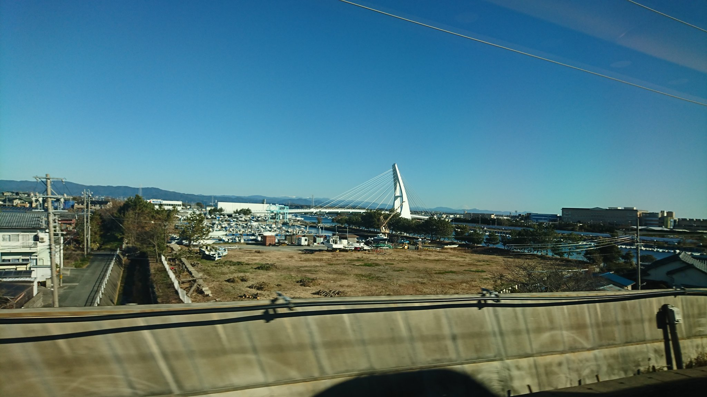
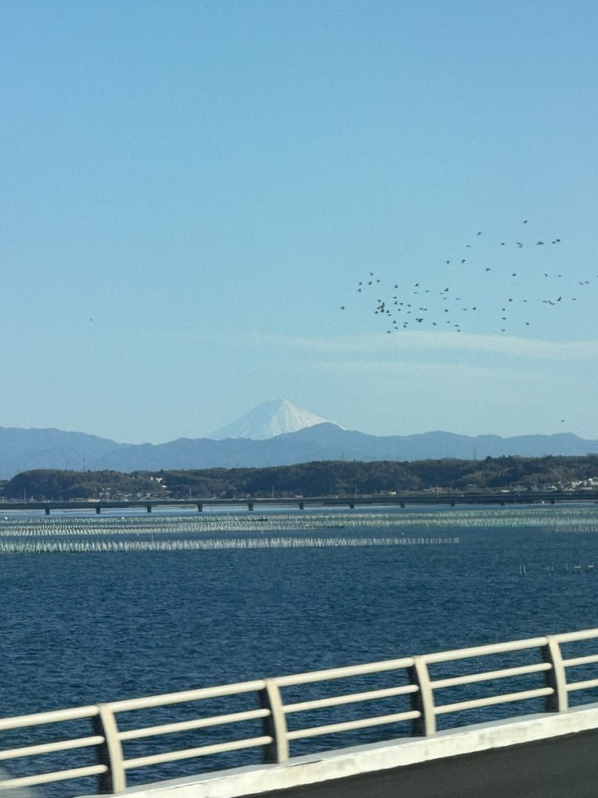

TOKAIDO SHINKANSEN WINDOW VIEW
Can you see Lake Hamana from the Shinkansen?
The train runs over the water.

- Section
- Hamamatsu → Toyohashi
- Seat side
- Seat A · sea side / Seat E · mountain side
- Timing
- About 73 minutes after leaving Tokyo on a Nozomi train
- Photos
- 9 photos
How to find Lake Hamana
After Hamamatsu, Lake Hamana spreads out on both sides of the train. It is not only a Seat E view; Seat A also gets water, bridges, and open sky. On a sunny day, the light off the water is one of the most journey-like moments on the line. Look for the eel-farming rafts.
If you are traveling from Tokyo toward Shin-Osaka, start watching the Seat A · sea side / Seat E · mountain side window as you approach Hamamatsu → Toyohashi. If you are traveling toward Tokyo, the order is reversed.
Why this view matters
Lake Hamana is one of the window views that make the Tokaido Shinkansen more than a transfer. The train moves fast, so visibility depends on weather, seat position, and timing.
Lake Hamana in photos



